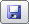

I parametri si distinguono in:
- parametri permanenti nel CN; sono mantenuti in una memoria non volatile del CN e copiati nei parametri correnti all’accensione;
- parametri correnti del CN; possono essere modificati nel corso delle lavorazioni;
- parametri nel file utente (user.ini); pur essendo la copia dei parametri permanenti, il loro aggiornamento è facoltà dell’Operatore.
Nelle finestre di dialogo che modificano i parametri del CN, le caselle sono mostrate nei colori:
- blu, se il parametro differisce da quello in uso corrente nel CN;
- rosso, se il parametro differisce da quello registrato nel file utente;
- nero, se il parametro è uguale a quello in uso corrente nel CN e a quello registrato nel file utente.
Dopo aver modificato i parametri all’occorrenza:
- fare clic sul pulsante per inviare i dati al CN;
- fare clic sul pulsante per richiedere i dati al CN;
- fare clic sul pulsante per leggere i dati dal file utente;
- fare clic sul pulsante

per salvare i dati nel file utente;
Per saperne di più
Salvare i parametri nella memoria del CN
Controllo parametri